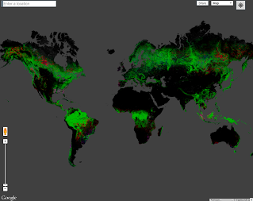
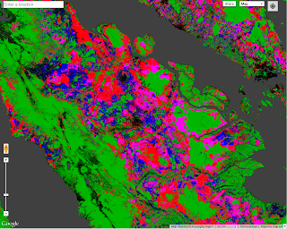

Global Forest Change
This section requires the next libraries:
library(rgee)
library(rgeeExtra)
ee_Initialize()Introduction to Forest Change Analysis in Earth Engine
|  |  |
Figure 1. Forest change estimated by Hansen et al. (2013). Global Change, 2000 - 2012 (left); Change in Riau, Indonesia, 2000 - 2012 (right)
Welcome to the Google Earth Engine tutorial for using Hansen et al. (2013) global forest cover and change data and Forest Monitoring for Action (FORMA, Hammer et al. 2009) data from Global Forest Watch. This tutorial provides examples of how to use Earth Engine to visualize these data, how to compute forest change over time and other statistics within a region of interest and how to download both the data and results of analyses.
License and Attribution
The data described in this tutorial are licensed under a Creative Commons Attribution 4.0 International License. Please use the recommended citation on the relevant dataset description page.
Prerequisites
The tutorial assumes no programming background, although it does assume a willingness to learn some programming. Before proceeding, please make sure to:
Signup for Earth Engine. Once you have been accepted, you will receive an email with additional information.
Get familiar with the Earth Engine Rstudio, the IDE for writing Earth Engine R code in Rstudio. Learn more here.
If you are unfamiliar with R, check out the R for Earth Engine tutorial.
If you are unfamiliar with the Earth Engine API, check out the Introduction to the Earth Engine API tutorial.
Once you’re familiar with R, the Earth Engine API and Rstudio, get started on the tutorial.
Introduction to Hansen et al. Global Forest Change Data
The Hansen et al. (2013) Global Forest Change dataset in Earth Engine represents forest change, at 30 meters resolution, globally, between 2000 and 2014. Let’s start by adding the Hansen et al. data to the map. Either import the global forest change data (learn more about searching and importing datasets) by searching for “Hansen forest” and naming the import gfc2014, or copy the following code into the Rstudio:
gfc2014 <- ee$Image('UMD/hansen/global_forest_change_2015')
Map$addLayer(gfc2014)Click on the Run button at the top of the Rstudio and you should see something like Figure 1.
Figure 1. Default visualization of Hansen et al. (2013) forest change data.
Don’t worry, you’ll make it look better soon. (Learn more about default image visualizations in Earth Engine). By the end of this section, you’ll have an image that looks something like Figure 2, where green represents where the study detected forest in the year 2000, red is estimated forest loss over the study period, blue is forest gain during that period, magenta is areas where forest has been both lost and gained, and non-forest areas are masked.
Figure 2. Custom visualization of Hansen et al. (2013) forest change data.
Recall that when a multi-band image is added to a map, the first three bands of the image are chosen as red, green, and blue, respectively, and stretched according to the data type of each band. The reason the image looks red is that the first three bands are treecover2000, loss, and gain. The treecover2000 band is expressed as a percent and has values much higher than loss (green) and gain (blue) which are binary ({0, 1}). The image therefore displays as overwhelmingly red.
The bands in the Global Forest Change data are:
| Band Name | Description | Range |
|---|---|---|
| treecover2000 | Percentage of tree cover in the pixel. | 0 - 100 |
| loss | 1 if loss ever happen during the study period. | 0 or 1 |
| gain | 1 if gain ever happen during the study period. | 0 or 1 |
| lossyear | The year loss occurred, one-indexed from year 2001, or zero if no loss occurred. | 0 - 12 |
| first_b30 | The Landsat 7 red band built from the first valid pixels in 2000 (or older if there were no valid pixels in 2000). | 0 - 255 |
| first_b40 | The Landsat 7 near infrared band built from the first valid pixels in 2000. | 0 - 255 |
| first_b50 | The first Landsat 7 short wave infrared band built from the first valid pixels in 2000. | 0 - 255 |
| first_b70 | The second Landsat 7 short wave infrared band built from the first valid pixels in 2000. | 0 - 255 |
| last_b30 | The Landsat 7 red band built from the latest valid pixels in 2012. | 0 - 255 |
| last_b40 | The Landsat 7 near infrared band built from the latest valid pixels in 2012. | 0 - 255 |
| last_b50 | The first Landsat 7 short wave infrared band built from the latest valid pixels 2012. | 0 - 255 |
| last_b70 | The second Landsat 7 short wave infrared band built from the latest valid pixels 2012. | 0 - 255 |
| datamask | No data (0), mapped land surface (1), and permanent water bodies (2). | 0, 1, 2 |
To display forest cover in the year 2000 as a grayscale image, you can use the treecover2000 band, specified in the second argument to Map.addLayer():
Map$addLayer(gfc2014, list(bands = 'treecover2000'), 'treecover2000')This results in an image that should look something like Figure 3.

Figure 3. Grayscale image of year 2000 tree cover in the South America.
Here’s an image that uses 3 bands, Landsat bands 5, 4, and 3 for 2015. This band combination shows healthy vegetation as green and soil as mauve::
Map$addLayer(
gfc2014, list(bands = c('last_b50', 'last_b40', 'last_b30')), 'false color')The result should look something like Figure 4.
Figure 4. Landsat 7, year 2015 false color composite of the South America.
One nice visualization of the Global Forest Change dataset shows forest extent in 2000 as green, forest loss as red, and forest gain as blue. Specifically, make loss the first band (red), treecover2000 the second band (green), and gain the third band (blue):
Map$addLayer(gfc2014, list(bands = c('loss', 'treecover2000', 'gain')), 'green')The loss and gain band values are binary, so they will be barely visible on the image, which should look something like Figure 5.
Figure 5. Year 2000 tree cover in the South America (green).
We’d like forest loss to show up as bright red and forest gain to show up as bright blue. To fix this, we can use the visualization parameter max to set the range to which the image data are stretched. Note that the max visualization parameter takes a list of values, corresponding to maxima for each band:
Map$addLayer(gfc2014, list(
bands = c('loss', 'treecover2000', 'gain'),
max = c(1, 255, 1)
), 'forest cover, loss, gain')The result should look something like Figure 6.
Figure 6. South America forest loss (red), year 2000 forest cover (green) and gain (blue).
This results in an image that is green where there’s forest, red where there’s forest loss, blue where there’s forest gain, and magenta where there’s both gain and loss. A closer inspection, however, reveals that it’s not quite right. Instead of loss being marked as red, it’s orange. This is because the bright red pixels mix with the underlying green pixels, producing orange pixels. Similarly the pixels where there’s forest, loss, and gain are pink - a combination of green, bright red and bright blue. See Figure 7 for an illustration.
Figure 7. US Pacific North West forest loss (red), year 2000 cover (green) and gain (blue).
To get the image promised at the beginning of the tutorial, you can create separate images for forest, loss, gain, and for both loss and gain. Add each of these images to the map in the order that’s best for display.
Palettes
To display each image as a different color, you can use the palette parameter of Map$addLayer() for single band images. Palettes let you set the color scheme with which the image is displayed (learn more about palettes). Recall from the Earth Engine API tutorial that the colors in a palette are linearly stretched to the min and max.
For example, to use a green palette to display the forest extent image, you could use:
Map$addLayer(gfc2014, list(
bands = c('treecover2000'),
palette = c('000000', '00FF00')
), 'forest cover palette')The result should look something like Figure 8.
Figure 8. Year 2000 forest cover in South America.
Zooming in gives a better sense for the resolution of the imagery. Figure 9 shows an area around Mariscal Estigarribia in Paraguay.
Figure 9. Year 2000 treecover around Mariscal Estigarribia in Paraguay.
The image shown in Figure 3 is a bit dark. The problem is that the treecover2000 band has a byte data type ([0, 255]), when in fact the values are precentages ([0, 100]). To brighten the image, you can set the min and/or max parameters accordingly. The palette is then stretched between those extrema.
Map$addLayer(gfc2014, list(
bands = c('treecover2000'),
palette = c('000000', '00FF00'),
max = 100
), 'forest cover percent')The result should look something like Figure 9. Note that in this example, only the max is set. The min is zero by default.
Figure 9. Year 2000 forest cover around Mariscal Estigarribia in Paraguay, stretched to [0, 100].
Masking
All of the images shown so far have had big black areas were there the data is zero. For example, there are no trees in the ocean. To make these areas transparent, you can mask their values. Every pixel in Earth Engine has both a value and a mask. The image is rendered with transparency set by the mask, with zero being completely transparent and one being completely opaque.
You can mask an image with itself. For example, if you mask the treecover2000 band with itself, all the areas in which forest cover is zero will be transparent:
Map$addLayer(gfc2014$mask(gfc2014), list(
bands = c('treecover2000'),
palette = c('000000', '00FF00'),
max = 100
), 'forest cover masked')The result should look something like Figure 10.
Figure 10. Year 2000 tree cover, stretched and masked.
Example
It’s almost possible to make a visualization of the Hansen data like the one at the beginning of the tutorial. In this example, we’re putting everything together with one small difference. Instead of specifying the bands parameter in the Map$addLayer call, we’re creating new images using select():
treeCover <- gfc2014$select(c('treecover2000'))
lossImage <- gfc2014$select(c('loss'))
gainImage <- gfc2014$select(c('gain'))
# Add the tree cover layer in green.
Map$addLayer(treeCover$updateMask(treeCover),
list(palette = c('000000', '00FF00'), max = 100), 'Forest Cover')+
# Add the loss layer in red.
Map$addLayer(lossImage$updateMask(lossImage),
list(palette = c('FF0000')), 'Loss')+
# Add the gain layer in blue.
Map$addLayer(gainImage$updateMask(gainImage),
list(palette = c('0000FF')), 'Gain')The result should look something like Figure 11.
Figure 11. Forest loss (red), year 2000 cover (green) and gain (blue).
Observe that there are three addLayer() calls. Each addLayer() call adds a layer to the map. Mousing over the Layers button in the upper right of the map reveals these layers. Each layer can be turned off or on using the checkbox next to it, and the opacity of the layer can be affected by the slider next to the layer name.
We’re almost able to make the image shown at the start of the tutorial. However, the layer showing the pixels with both loss and gain is missing. It is missing because we need to know how to perform some calculations on image bands before we can calculate which pixels show both loss and gain. This is the topic of the next section.
Quantifying Forest Change
Let’s start with the calculation needed to create a band that shows pixels where the Hansen et al. data show both loss and gain.
The Hansen et al. dataset has a band whose pixels are 1 where loss occurred and 0 otherwise (loss) and a band that is 1 where gain has occurred and a 0 otherwise (gain). To create a band where pixels in both the loss and the gain bands have a 1, you can use the And() logical method on images. The And() method is called like image1$And(image2) and returns an image in which pixels are 1 where both image1 and image2 are 1, and 0 elsewhere:
# Load the data and select the bands of interest.
gfc2014 <- ee$Image('UMD/hansen/global_forest_change_2015')
lossImage <-gfc2014$select('loss')
gainImage <- gfc2014$select('gain')
# Use the and() method to create the lossAndGain image.
gainAndLoss <- gainImage$And(lossImage)
# Show the loss and gain image.
Map$addLayer(gainAndLoss$updateMask(gainAndLoss),
list(palette= 'FF00FF'), 'Gain and Loss')The result, zoomed into Arkansas with satellite view, should look something like Figure 1.
Figure 1. Pixels with forest loss and gain in Arkansas.
Combining this example with the result from the previous section, it’s now possible to recreate the figure from the beginning of the tutorial:
# Displaying forest, loss, gain, and pixels where both loss and gain occur.
gfc2014 <- ee$Image('UMD/hansen/global_forest_change_2015')
lossImage <- gfc2014$select('loss')
gainImage <- gfc2014$select('gain')
treeCover <- gfc2014$select('treecover2000')
# Use the and() method to create the lossAndGain image.
gainAndLoss <- gainImage$And(lossImage)
# Add the tree cover layer in green.
Map$addLayer(treeCover$updateMask(treeCover),
list(palette= c('000000', '00FF00'), max= 100), 'Forest Cover')
# Add the loss layer in red.
Map$addLayer(lossImage$updateMask(lossImage),
list(palette= 'FF0000'), 'Loss')
# Add the gain layer in blue.
Map$addLayer(gainImage$updateMask(gainImage),
list(palette= '0000FF'), 'Gain')
# Show the loss and gain image.
Map$addLayer(gainAndLoss$updateMask(gainAndLoss),
list(palette= 'FF00FF'), 'Gain and Loss')Quantifying Forest Change in a Region of Interest
Now that you’re more familiar with the bands in the Hansen et al. dataset, we can use concepts learned so far to compute statistics about forest gain and loss in a region of interest. For this we’ll need to use vector data (points, lines, and polygons). A vector dataset is represented as a FeatureCollection in Earth Engine. (Learn more about feature collections and how to import vector data.)
In this section, we’ll compare the total amount of forest loss that happened within the Congo Republic in the year 2012 to the amount of forest loss that happened within the country’s protected areas at the same time.
As you learned in the Earth Engine API tutorial, the key method for calculating statistics in an image region is reduceRegion(). (Learn more about reducing image regions.) For example, suppose we want to calculate the number of pixels estimated to represent forest loss during the study period. For that purpose, consider the following code:
# Load country features from Large Scale International Boundary (LSIB) dataset.
countries <- ee$FeatureCollection('USDOS/LSIB_SIMPLE/2017')
# Subset the Congo Republic feature from countries.
congo <- countries$filter(ee$Filter$eq('country_na', 'Rep of the Congo'))
# Get the forest loss image.
gfc2014 <- ee$Image('UMD/hansen/global_forest_change_2015')
lossImage <- gfc2014$select('loss')
# Sum the values of forest loss pixels in the Congo Republic.
stats <- lossImage$reduceRegion(
reducer = ee$Reducer$sum(),
geometry = congo,
scale = 30
)
ee$Dictionary$getInfo(stats)This example uses the ee$Reducer$sum() reducer to sum the values of the pixels in lossImage within the congo feature. Because lossImage consists of pixels that have a value of 1 or 0 (for loss or not loss, respectively), the sum of these values is equivalent to the number of pixels of loss in the region.
Unfortunately, running the script as it is results in an error.
The default maximum number of pixels in reduceRegion() is 10 million. This error message indicates that the Congo Republic covers about 383 million Landsat pixels. Luckily, reduceRegion() takes many parameters, one of which (maxPixels) lets you control how many pixels are used in the computation. Specifying this parameter allows the computation to succeed:
# Load country features from Large Scale International Boundary (LSIB) dataset.
countries <- ee$FeatureCollection('USDOS/LSIB_SIMPLE/2017')
# Subset the Congo Republic feature from countries.
congo <- countries$filter(ee$Filter$eq('country_na', 'Rep of the Congo'))
# Get the forest loss image.
gfc2014 <- ee$Image('UMD/hansen/global_forest_change_2015')
lossImage <- gfc2014$select('loss')
# Sum the values of forest loss pixels in the Congo Republic.
stats <- lossImage$reduceRegion(
reducer = ee$Reducer$sum(),
geometry = congo,
scale = 30,
maxPixels = 1e9
)
ee$Dictionary$getInfo(stats)By expanding the object printed to the console, observe that the result is 4897933 pixels of forest lost. You can clean up the printout in the console a bit by labeling the output and getting the result of interest from the dictionary returned by reduceRegion():
print(paste0("pixels representing loss: ", ee$Dictionary$getInfo(stats$get('loss'))))Calculating Pixel Areas
You’re almost ready to answer the question of how much area was lost in the Congo Republic, and how much of that was in protected areas. The remaining part is to convert pixels into actual area. This conversion is important because we don’t necessarily know the size of the pixels input to reduceRegion(). To help compute areas, Earth Engine has the ee$Image$pixelArea() method which generates an image in which the value of each pixel is the pixel’s area in square meters. Multiplying the loss image with this area image and then summing over the result gives us a measure of area:
# Load country features from Large Scale International Boundary (LSIB) dataset.
countries <- ee$FeatureCollection('USDOS/LSIB_SIMPLE/2017')
# Subset the Congo Republic feature from countries.
congo <- countries$filter(ee$Filter$eq('country_na', 'Rep of the Congo'))
# Get the forest loss image.
gfc2014 <- ee$Image('UMD/hansen/global_forest_change_2015')
lossImage <- gfc2014$select('loss')
areaImage <- lossImage$multiply(ee$Image$pixelArea())
# Sum the values of forest loss pixels in the Congo Republic.
stats <- areaImage$reduceRegion(
reducer = ee$Reducer$sum(),
geometry = congo,
scale = 30,
maxPixels = 1e9
)
print(paste0("pixels representing loss: ", ee$Dictionary$getInfo(stats$get('loss')), " square meters"))Now the result is 4,372,566,344 square meters lost over the study period.
You are now ready to answer the question at the start of this section - how much forest area was lost in the Congo Republic in 2012, and how much of that was in protected areas?
# Load country features from Large Scale International Boundary (LSIB) dataset.
countries <- ee$FeatureCollection('USDOS/LSIB_SIMPLE/2017')
# Subset the Congo Republic feature from countries.
congo <- ee$Feature(
countries
$filter(ee$Filter$eq('country_na', 'Rep of the Congo'))
$first()
)
# Subset protected areas to the bounds of the congo feature
# and other criteria. Clip to the intersection with congo.
protectedAreas <- ee$FeatureCollection('WCMC/WDPA/current/polygons')$filter(ee$Filter$And(
ee$Filter$bounds(congo$geometry()),
ee$Filter$neq('IUCN_CAT', 'VI'),
ee$Filter$neq('STATUS', 'proposed'),
ee$Filter$lt('STATUS_YR', 2010)
))
$map(function(feat){
return(congo$intersection(feat))
})
# Get the loss image.
gfc2014 <- ee$Image('UMD/hansen/global_forest_change_2015')
lossIn2012 <- gfc2014$select('lossyear')$eq(12)
areaImage <- lossIn2012$multiply(ee$Image$pixelArea())
# Calculate the area of loss pixels in the Congo Republic.
stats <- areaImage$reduceRegion(
reducer = ee$Reducer$sum(),
geometry = congo$geometry(),
scale = 30,
maxPixels = 1e9
)
print(paste0("Area lost in the Congo Republic: ",
ee$Dictionary$getInfo(stats$get('lossyear')),
" square meters"))
# Calculate the area of loss pixels in the protected areas.
stats <- areaImage$reduceRegion(
reducer = ee$Reducer$sum(),
geometry = protectedAreas$geometry(),
scale = 30,
maxPixels = 1e9
)
print(paste0("Area lost in protected areas: ",
ee$Dictionary$getInfo(stats$get('lossyear')),
" square meters")) The output indicates that of the 348,036,295 square meters of forest lost in the Congo Republic in 2012, 11,880,976 of those were in protected areas, as represented in the World Database on Protected Areas table.
The only changes between this script and the one just prior are the addition of the protected area information and changing the script from looking at overall loss to looking at loss in 2012. This required two changes. First, there’s a new lossIn2012 image which has a 1 where loss was recorded in 2012, 0 otherwise. Second, because the name of the band is different (lossyear instead of loss) the property name had to change in the print statement.
In the next section, we will explore some advanced methods for computing and charting forest loss for every year, instead of just one year as we did in this section.
Charting Yearly Forest Loss
Calculating Yearly Forest Loss
In the previous section you learned how to calculate total forest area lost in the given region of interest using the reduceRegion method. Instead of calculating the total loss, it would be helpful to compute the loss for each year. The way to achieve this in Earth Engine is using a Grouped Reducer.
To group output of reduceRegion(), you can specify a grouping band that defines groups by integer pixel values. In the following example, we slightly modify the previous code and add the lossYear band to the original image. Each pixel in the lossYear band contain values from 0 to 14 - indicating the year in which the loss occurred. We also change the reducer to a grouped reducer, specifying the band index of the grouping band (1) so the pixel areas will be summed and grouped according to the value in the lossYear band.
# Load country boundaries from LSIB.
countries <- ee$FeatureCollection('USDOS/LSIB_SIMPLE/2017')
# Get a feature collection with just the Congo feature.
congo <- countries$filter(ee$Filter$eq('country_co', 'CF'))
# Get the loss image.
# This dataset is updated yearly, so we get the latest version.
gfc2017 <- ee$Image('UMD/hansen/global_forest_change_2017_v1_5')
lossImage <- gfc2017$select('loss')
lossAreaImage <- lossImage$multiply(ee$Image$pixelArea())
lossYear <- gfc2017$select('lossyear')
lossByYear <- lossAreaImage$addBands(lossYear)$reduceRegion(
reducer = ee$Reducer$sum()$group(
groupField = 1
),
geometry = congo,
scale = 30,
maxPixels = 1e9
)
print(ee$Dictionary$getInfo(lossByYear)) Once you run the above code, you will see the yearly forest loss area printed out in a nested list called groups. We can format the output a little to make the result a dictionary, with year as the key and loss area as the value. Notice that we are using the format() method to convert the year values from 0-14 to 2000-2014.
var statsFormatted = ee.List(lossByYear.get('groups'))
.map(function(el) {
var d = ee.Dictionary(el);
return [ee.Number(d.get('group')).format("20%02d"), d.get('sum')];
});
var statsDictionary = ee.Dictionary(statsFormatted.flatten());
print(statsDictionary);Making a chart
var chart = ui.Chart.array.values({
array: statsDictionary.values(),
axis: 0,
xLabels: statsDictionary.keys()
}).setChartType('ColumnChart')
.setOptions({
title: 'Yearly Forest Loss',
hAxis: {title: 'Year', format: '####'},
vAxis: {title: 'Area (square meters)'},
legend: { position: "none" },
lineWidth: 1,
pointSize: 3
});
print(chart);Introduction to Forest Monitoring for Action (FORMA) data
FORMA is a MODIS based 500 x 500 meter twice-monthly deforestation alerting system for the humid tropical forests. The FORMA 500 dataset in Earth Engine is an image with alerts starting in January 2006 and updated monthly. Each alert has a time associated with it in a single band named alert_date in units of epoch seconds. Filtering FORMA by dates and calculating alerts within areas of interest are two of the most important things you can do with the FORMA dataset.
Filtering FORMA by Date
To show just those alerts that occur in 2012, find pixels that have times between the first day of 2012 and the first day of 2013, expressed in seconds since midnight, January 1, 1970:
# Convert dates from milliseconds to seconds.
start <- ee$Date('2012-01-01')$millis()$divide(1000)
end <- ee$Date('2013-01-01')$millis()$divide(1000)
# Load the FORMA 500 dataset.
forma <- ee$Image('FORMA/FORMA_500m')
# Create a binary layer from the dates of interest.
forma2012 <- forma$gte(start)$And(forma$lte(end))
Map$setCenter(15.87, -0.391, 7)
Map$addLayer(
forma2012$mask(forma2012),
list(palette = 'FF0000'),
'FORMA alerts in 2012'
)In this example, forma2012 is a binary image containing only those pixels that have times occurring in 2012 (i.e. all other pixels are masked).
Counting FORMA Alerts in a Region of Interest
As we did in the previous section with the Hansen et al. data, we can start by counting the number of FORMA alerts (pixels) in an area of interest. For example, to count the number of alerts in protected areas of the Congo Republic in 2012, build on the previous example as follows:
# Load country features from Large Scale International Boundary (LSIB) dataset.
countries <- ee$FeatureCollection('USDOS/LSIB_SIMPLE/2017')
# Subset the Congo Republic feature from countries.
congo <- ee$Feature(
countries$
filter(ee$Filter$eq('country_na', 'Rep of the Congo'))$
first()
)
# Subset protected areas to the bounds of the congo feature
# and other criteria. Clip to the intersection with congo.
protectedAreas <- ee$FeatureCollection('WCMC/WDPA/current/polygons')$
filter(ee$Filter$And(
ee$Filter$bounds(congo$geometry()),
ee$Filter$neq('IUCN_CAT', 'VI'),
ee$Filter$neq('STATUS', 'proposed'),
ee$Filter$lt('STATUS_YR', 2010)
))$map(function(feat){
return(congo$intersection(feat))
})
# Display protected areas on the map.
Map$addLayer(
protectedAreas,
list(color = '000000'),
'Congo Republic protected areas'
)
# Calculate the number of FORMA pixels in protected
# areas of the Congo Republic, 2012.
stats <- forma2012$reduceRegion(
reducer = ee$Reducer$sum(),
geometry = protectedAreas$geometry(),
scale = 500
)
print(paste0('Number of FORMA pixels, 2012: ', ee$Dictionary$getInfo(stats$get('constant'))))Counting FORMA Alerts in Several Regions of Interest
So far, we’ve been computing statistics in a single region at a time. For computing statistics in multiple regions at once, you can use reduceRegions(). Again building on the previous example:
regionsStats <- forma2012$reduceRegions(
collection = protectedAreas,
reducer = ee$Reducer$sum(),
scale = forma2012$projection()$nominalScale()
)
print(ee$Dictionary$getInfo(regionsStats))
Examine the object printed to the console and observe that the output of reduceRegions() is another FeatureCollection. Note that every region in the collection of the Congo Republic protected areas now has an additional property, sum, named after the reducer. The value of this property is the output of the reducer, or the number of 2012 alerts in the protected areas.
Comparing FORMA and Hansen et al. Datasets
To compare the FORMA and Hansen et al. datasets, you can use logical operators. (Learn more about logical operations). Specifically, we’d like to make an image in which pixels marked by both FORMA and the Hansen et al. data as deforestation are 1 and the rest are zero. This code makes such an image for 2012 and displays it along with other predicted deforestation layers:
# Convert dates from milliseconds to seconds.
start <- ee$Date('2012-01-01')$millis()$divide(1000)
end <- ee$Date('2013-01-01')$millis()$divide(1000)
region <- ee$Geometry$Rectangle(c(-59.81163, -9.43348, -59.27561, -9.22818))
# Load the FORMA 500 dataset.
forma <- ee$Image('FORMA/FORMA_500m')
# Create a binary layer from the dates of interest.
forma2012 <- forma$gte(start)$And(forma$lte(end))
# Load Hansen et al. data and get change in 2012.
gfc <- ee$Image('UMD/hansen/global_forest_change_2015')
gfc12 <- gfc$select('lossyear')$eq(12)
# Create an image which is one where the datasets
# both show deforestation and zero elsewhere.
gfc_forma <- gfc12$eq(1)$And(forma2012$eq(1))
# Display data on the map.
Map$setCenter(-59.58813, -9.36439, 11)
Map$addLayer(forma$updateMask(forma), list(palette = '00FF00'), 'Forma (green)')
Map$addLayer(gfc12$updateMask(gfc12), list(palette = 'FF0000'), 'Hansen (red)')
Map$addLayer(
gfc_forma$updateMask(gfc_forma),
list(palette = 'FFFF00'),
'Hansen & FORMA (yellow)'
)This concludes the overview of forest change datasets in Earth Engine. We’re looking forward to seeing what you can do with them!